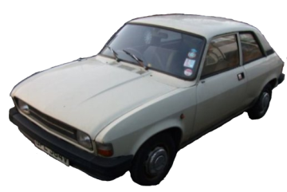
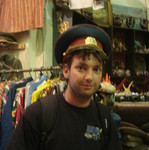
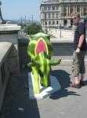
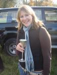

The Team
So here we are. Dominic, Patrick and Vicki make up Rolling Anomaly. We're a fun loving bunch, always up for a laugh and a bit of a mission.
Why Rolling Anomaly? The astute amongst you will have noticed that if you re-arrange our our name you get "Mongolian Rally", not quite Mongol Rally but as close as damn it! It took hours of deliberation and many many emails to come up with the name as it should. After all we do have to stick with it all the way to Mongolia!!

Barney
Country most looking forward to visiting on the rally: Anywhere with Tarmac
I think we are going to make it as far as: The Mongolian border
Thing I am most concerned about on the rally is: My suspension
Best way to spend a Sunday afternoon: Full wash and Wax
Favourite alcoholic beverage: 98 Ron
Favourite pastime: Nipping along country lanes with the wind in my wipers
Favourite Kids TV show: Flintstones
Earliest childhood memory: Tie-dyed T-shirts and flares
If I we an animal I would be a: A Sloth
Describe other team members in one phrase: Dominic - cold hands warm heart, Vicki - nice garage, could do with a lick of paint, Pat - seems nice from a distance

Dominic Spill
Country most looking forward to visiting on the rally: All of the 'Stans
I think we are going to make it as far as: UB, with or (more likely) without Barney
Thing I am most concerned about on the rally is: Breaking down in Hyde Park
Best way to spend a Sunday afternoon: Anything that ends with a roast dinner
Favourite alcoholic beverage: Cider
Favourite pastime: Tinkering with stuff
Favourite Kids TV show: Captain Planet
Earliest childhood memory: Searching for monsters in the woods behind our house
If I we an animal I would be a: A Tiger, or at least a Kitten who thinks it's a Tiger
Describe other team members in one phrase: Pat - most likely to get us all arrested, Vicki - most likely to get us all lost, Barney - most likely to get us all left behind

Patrick Sumby
Country most looking forward to visiting on the rally: Iran or Mongolia
I think we are going to make it as far as: Turkey
Thing I am most concerned about on the rally is: Mosquitoes and their love for my blood
Best way to spend a Sunday afternoon: Lazy day in the park then dinner with friends
Favourite alcoholic beverage: Amstel
Favourite pastime: Watching films
Favourite Kids TV show: Postman Pat
Earliest childhood memory: Sitting on my grandads knee and him smoking a pipe
If I we an animal I would be a: Polar Bear
Describe other team members in one phrase: Dominic - trouble, Vicki - trouble, Barney - more trouble than all of us put together

Vicki Spill
Country most looking forward to visiting on the rally: Anywhere with Camels
I think we are going to make it as far as: The first 'Stan
Thing I am most concerned about on the rally is: The lack of pants the boys are packing
Best way to spend a Sunday afternoon: In the pub with a quiz machine and a pint of cider and black
Favourite alcoholic beverage: Champagne
Favourite pastime: Scuba diving
Favourite Kids TV show: Button Moon
Earliest childhood memory: Buying my brother a really awful toy when he was born (it was green and looked like a cuddly potato)
If I we an animal I would be a: Turtle
Describe other team members in one phrase: Dominic - most likely to get us all arrested, Pat - brave to be coming along with the spill siblings, Barney - means well but could be delusional